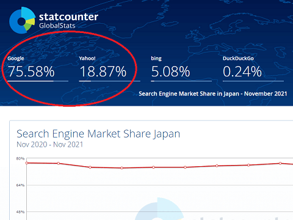
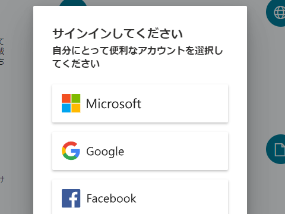
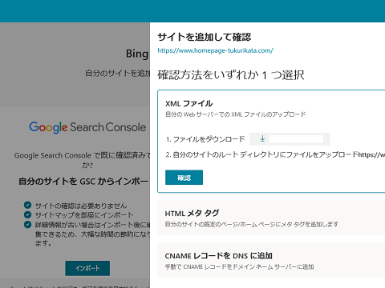
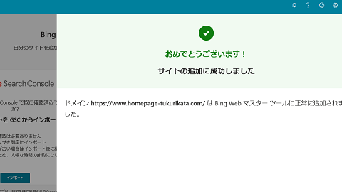
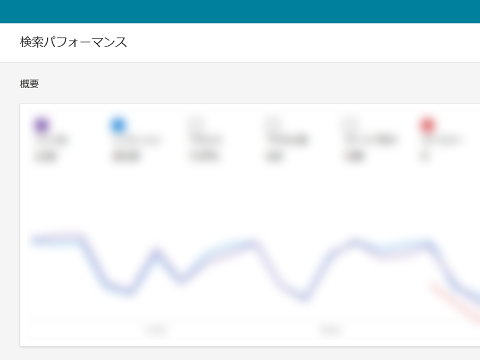
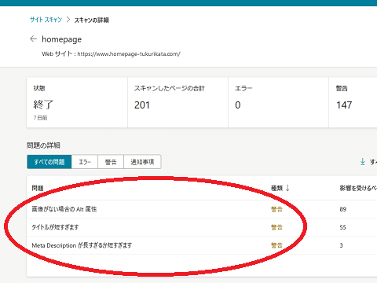
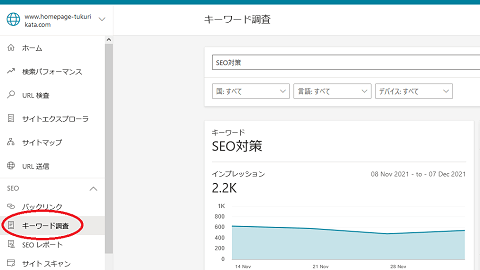
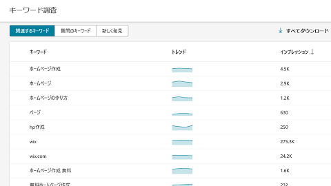

Bingウェブマスターツール登録のメリット
Bingはマイクロソフトの検索エンジンですが、日本でのシェアは約5％と低いため、BingのSEO対策をしてもそれほどメリットはないかもしれません。
けれども、2010年にヤフーが検索エンジンの開発を断念した際、米国ヤフーは提携する検索エンジンにBingを採用しています。そのため、当時、日本のヤフーもBing検索を採用していてもおかしくはない状況でした。
結果的には、日本のヤフーは日本語での実績のあるGoogle検索を採用しました。そのため、現在はヤフーでの検索分の18％程度と合算して、Googleのシェアが約94％程度と高くなっています。
米国ヤフー → Bing採用
日本ヤフー → Google採用

当時、もし仮にBingを採用していた場合、ヤフーでもBingの検索結果が返ってくることになるため、今頃は合計で約23％程度のシェアはあったのかもしれません。
今後もおそらくはGoogleのシェアが高いままで推移していくとは思いますが、万一、Bingが検索シェアを拡大した場合、Bing検索で自サイトがヒットしないとアクセス数が急減する可能性があります。リスクヘッジをするためにも、今からBingウェブマスターツールに登録し、BingのSEO対策も実施しておくことをおすすめします。
ちなみに、以前までは「Goolgeウェブマスターツール」もありましたが、「Google Search Console」へと名称が変更になったため、現在、ウェブマスターツールといえば、「Bingウェブマスターツール」のことになります。
Bingウェブマスターツールへの登録方法
Bingウェブマスターツールは、こちらのページから登録することができます。
当サイト運営者はGoogleアカウントを選択しましたが、サインインするアカウントを選択して申し込みをするとよいでしょう。

サイトの所有権の確認については、Search Consoleとの連携などもありますが、当サイト運営者はファイルをアップロードして確認しました。いずれかの好きな方法を選択すればよいと思います。

特に難しいことはないため、すぐに登録は完了するはずです。

完了しましたら、サイドバーの「サイトマップ」の箇所から、まずはサイトマップを送信しておきます。Google Search Consoleと同じものを送信しておくとよいでしょう。
しばらく時間をおくと、データが反映されているかと思いますので、検索パフォーマンスなどを確認しておくことをおすすめします。

また、サイトスキャンの箇所から警告などのエラーを確認できます。

alt属性がないなどの警告が出ていれば、適宜修正しておくことをおすすめします。
「キーワード調査」で検索ボリュームをチェック
Bingウェブマスターツールでは、「キーワード調査」の箇所で検索ボリュームをチェックすることができます。
キーワードの月間検索回数調べる際、Googleのキーワードプランナーなどもありますが、広告を配信しているユーザーでないと正確な数値を確認できませんし、他の有料ツールについても費用がかかります。
そのため、代替ツールとして、こちらのBingウェブマスターツールの「キーワード調査」でチェックされることをおすすめします。

こちらのキーワードツールは無料で利用できますし、特に制限はありません。
ただし、あくまでBingオーガニック検索での回数になるため、Google検索での回数分がカウントされておらず、検索回数はかなり少なく表示されると感じています。また検索ボリュームではなく、「インプレッション」となっているため、単純なキーワードの検索回数ではないと思います。
米国ではYahoo!への提供分も合算されているようですが、日本のヤフーはGoogle検索が採用されているため、どのような仕様になっているのかは不明です。
おそらくは、ヤフー分と合わせたあたりの数値に近いと感じていますが、いずれにしましても、無料でキーワード候補の調査をするには十分です。

簡単にキーワードの調査をする際、こちらのBingウェブマスターツールを使用されることをおすすめします。